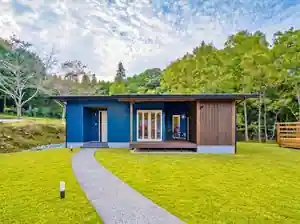
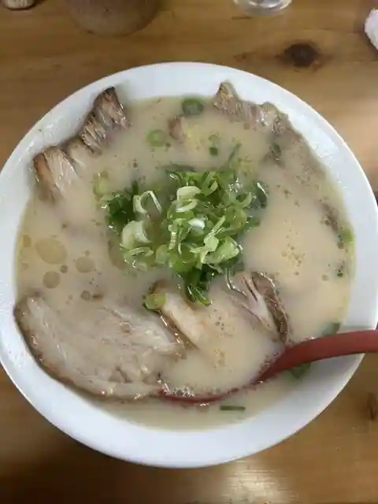

Japan / Mie / Tamaki
Tamaki · Mie
Tamaki
Highlighted on the Mie map.
Tamaki Town Hall
No bookable places to stay found in Tamaki — nearest options in Watarai.


Sights · Things to do · Places to eat · Places to stay · Day-to-day services
Nearby in Mie: ← Taki · Toba →
Other towns: Asahicho · Iga · Inabe · Ise · Kameyama · Kawagoe · Kiho · Kihokucho · Kisosaki · Komono · Kumanoshi · Kuwana · Matsusaka · Meiwa · Mihamacho · Minamiise · Nabari · Odai · Owase · Shima · Suzuka · Taiki · Taki · Toba · Toin · Tsu · Watarai · Yokkaichi
All towns in Mie · Back to all prefectures